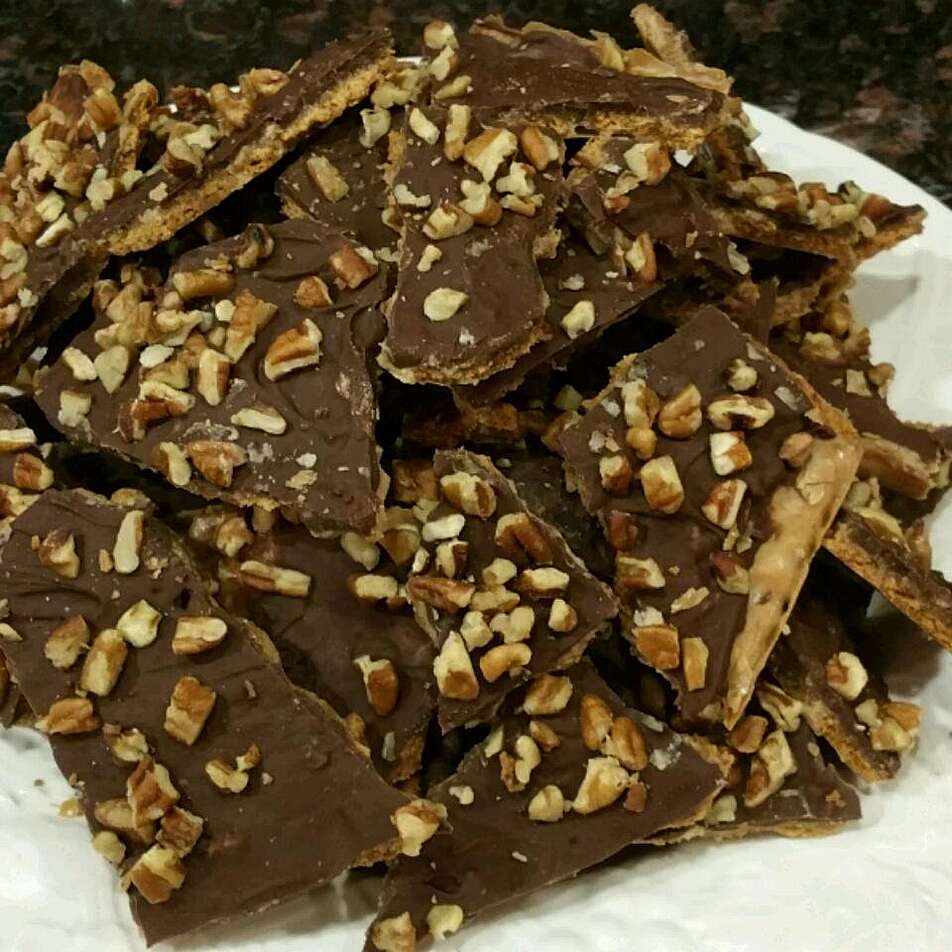

Toffee

Description
Very quick & easy toffee made with saltine crackers. You'll love it! Serves up to 25 people.
Ingredients
1 (10 ounce) package saltine crackers
1 cup butter
1 cup light brown sugar
1 (12 ounce) package semisweet chocolate chips
1 cup silvered almonds
Steps
Preheat oven to 325 degrees F (165 degrees C). Grease a baking sheet. Line baking sheet with saltine crackers, edges touching.
In a medium saucepan, combine butter and brown sugar and cook until mixture reaches 235 degrees F (112 degrees C) or a small amount of mixture dropped into cold water forms a small ball that flattens when placed on a flat surface. Pour mixture over crackers and spread evenly.
Bake in preheated oven 15 minutes. Sprinkle chocolate chips over hot toffee. When chips turn glossy, spread evenly with spatula. Sprinkle with almonds. Freeze 20 minutes before serving.